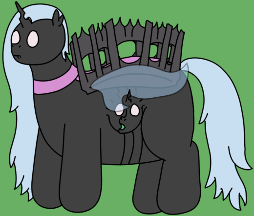

| Commonality | 11.8% (False Archons) |
| Durability | 7/10 |
| Strength | Physical: 3/10 Morphological: 7/10 Magical: 8/10 |
| Specials | Flight Low-Level Magic Shapeshifting |
| Personality | Affectionate and Slothful |
Palisades are heavy Facades spawned by False Archons. They act as ancillary progenitors for Swarmlings as well as portable cover for smaller Facades.
Reconcilants - Palisades
Palisades are quite large for Facades, standing at 5' 11" (180cm) with particularly chunky builds. Their bodies, wrapped in thick chitin, bear quite a bit of resemblance to Reconcilants, though with the addition of the large, chitinous fences that occupy most of their back. This "fence" acts as a safe space for smaller Facades, with Swarmlings in particular being adapted to firing out from the viewports.
Palisades are capable of altering their shape, and are better at it than most Facades. They most commonly use this ability only when necessary however, as removing their fences compromises much of their durability. They usually take the form of Reconcilants when they need to disguise, additionally disguising the pupae they spawn as needed.
Palisades are somewhat slow, lumbering creatures, with an unusual penchant towards affection. They can commonly be found cuddling or nuzzling their lesser siblings, and it is not uncommon for the Facades around a Palisade to also become affection seeking. This sphere of influence seems to be a consequence of how they pass off their spawned Swarmlings, radiating their personality into the environment due to a deliberately "soft" connection to the rest of the gestalt.
Unusually for a Facade, Palisades are capable of spawning. Like False Archons, they use magic to closely mimic the spawning of puppets. Where they differ from Reconcilants is that their spawn are not subpuppets, swiftly being passed to an Archon after spawning. In this stead, Palisades act closer to "subarchons" than anything else, though this term is widely disliked as Palisades are not capable of assuming control over parts of the gestalt. Notably, where False Archons will spawn two or even three Swarmlings to a single pupa, Palisades will only ever spawn one.
Palisades, contrary to the Reconcilants they mimic, usually try to stay far from the front lines. While they can absorb a considerable amount of damage if necessary, they prefer to stay back to give their carried Swarmlings a safe place to shoot from. Their spellcasting abilities outside of spawning are limited only to the most basic volleys of magical projectiles, similar to the basic attacks wielded by Tricksters.
Palisades have a fairly complex set of epigenetic triggers, though this comes as little surprise when observing them. The large chitinous "fences" shoulder much of the blame, but adapting to spawning takes significant effort for Facades compared to standard Puppets.
Palisades are there to mimic Reconcilants or other spawning Puppets, because it wouldn't be a fake puppet without a fake puppet spawner. The fences were a deliberate flavour addition, and one I'm quite fond of, as it gives them a particularly distinct silhouette.
